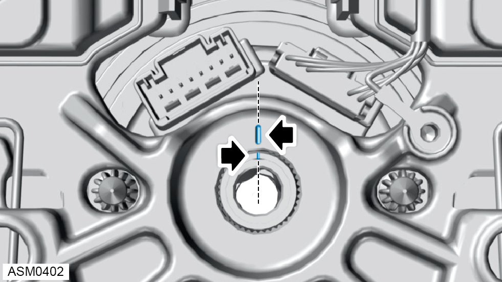

Installation

 CAUTION: Do not install steering wheel with alignment marks misaligned or damage may occur to stalk module connectors.
CAUTION: Do not install steering wheel with alignment marks misaligned or damage may occur to stalk module connectors.
NOTE: Before removing bolt, ensure the steering wheel is straight and the road wheels are pointing straight ahead. Mark the steering wheel position in relation to the stalk module.
CAUTION: Do not install steering wheel with alignment marks misaligned or damage may occur to stalk module connectors.